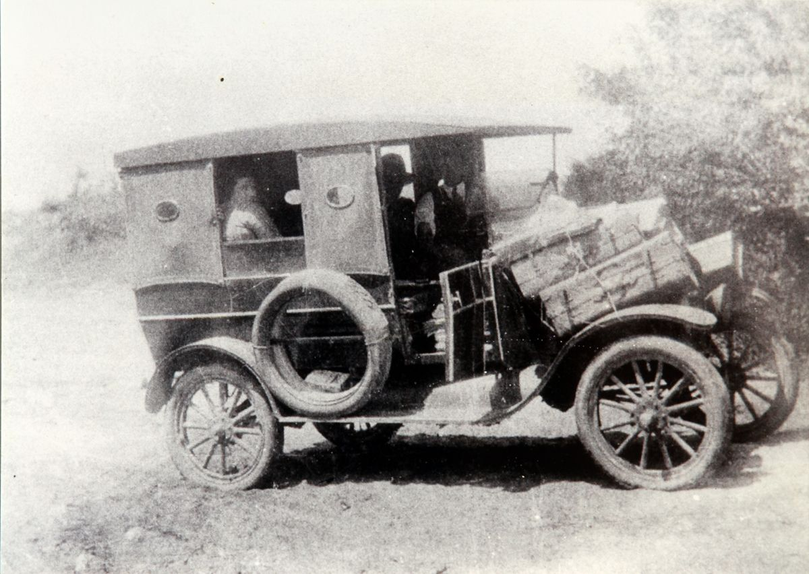

Historia de ONDA
En 1901 Colonia recibió por primera vez el tren, con la llegada de unas 1.500 personas desde Montevideo. Este hecho marcó un antes y un después, ya que permitió una mejor conexión con el resto del país y facilitó la comunicación y el traslado de personas.
ONDA no fue solo una empresa de ómnibus: fue parte de la vida diaria de millones de uruguayos durante más de medio siglo. Nació en 1935 como una pequeña cooperativa de empresarios visionarios, con la ilusión de acercar ciudades, pueblos y personas. Rápidamente, su prestigio creció: se abrieron nuevas agencias, se multiplicaron los destinos y la flota evolucionó, pasando de pequeños vehículos a modernos ómnibus que cambiaron la manera de viajar en Uruguay.
En la década del 70, ONDA era gigante: más de 2.000 empleados trabajaban cada día para que cada viaje fuera seguro y confiable. No había rincón del país que quedara fuera de su alcance, y su prestigio incluso cruzó fronteras, alcanzando distintos destinos internacionales y consolidándose como una de las compañías de transporte más importantes del país.
Pero como toda historia intensa, también tuvo sus desafíos. Hacia finales de su historia entre 1980 y 1982, ONDA realizó sus últimas incorporaciones de unidades, sumando modernos modelos DMC estadounidenses y Mercedes-Benz alemanes. Estas adquisiciones dieron un cierre destacado a la renovación de su flota, dejando huella con vehículos que marcaron una época en el transporte de pasajeros en Uruguay. Los ómnibus dejaron de circular, pero las historias, los recuerdos y las vivencias de quienes viajaron y trabajaron en ONDA quedaron para siempre en la memoria colectiva.
ONDA fue más que transporte: fue cercanía, confianza y un vínculo entre uruguayos. Cada viaje, cada ruta, cada kilómetro recorrido, dejó recuerdos que hoy siguen contando quiénes somos y cómo nos conectamos.
Eloy Perazza
Eloy G. Perazza, nacido en Tala en 1888 hijo de humildes chacareros canarios, fue el visionario que en 1925 fundó lo que luego sería la histórica empresa ONDA. Con un Ford T adaptado para ocho pasajeros inauguró la primera línea de ómnibus entre Colonia y Montevideo, un trayecto que en aquel entonces demoraba casi diez horas.
Su iniciativa marcó un antes y un después en el transporte nacional: unió pueblos, acercó a las personas y sentó las bases de la Organización Nacional de Autobuses (ONDA), que se convertiría en la compañía de transporte más grande del Uruguay. El coraje y la visión de Perazza lo transformaron en un verdadero pionero, dejando un legado que aún hoy es recordado en la memoria colectiva del país.
EL PRIMER "OMNIBUS". Este es el primer "ómnibus" con capacidad para ocho pasajeros, con el que Perazza abrió en 1925, la ruta hacia Montevideo.
Carta a Eloy G. Perazza
Señor Eloy G. Perazza
Juan R. Gómez 3218
Montevideo, Uruguay
Estimado señor Perazza:
Los esfuerzos pioneros que usted realizó al establecer una línea de ómnibus entre Colonia y Montevideo han llegado recientemente a mi conocimiento. Al abrir esa ruta, demostró coraje y visión de futuro, y la línea de transporte que hoy conecta ambas ciudades sigue siendo un homenaje a su iniciativa.
Sus experiencias en aquellos primeros años, y también en los posteriores, no podrían repetirse en la actualidad. Debe resultarle personalmente gratificante saber que ha hecho tanto por establecer un vínculo vital entre las dos ciudades.
Por supuesto, me complace saber que fue un automóvil Ford el que le sirvió tan bien en sus comienzos.
Espero que el futuro sea tan bueno para usted como lo ha sido su pasado.